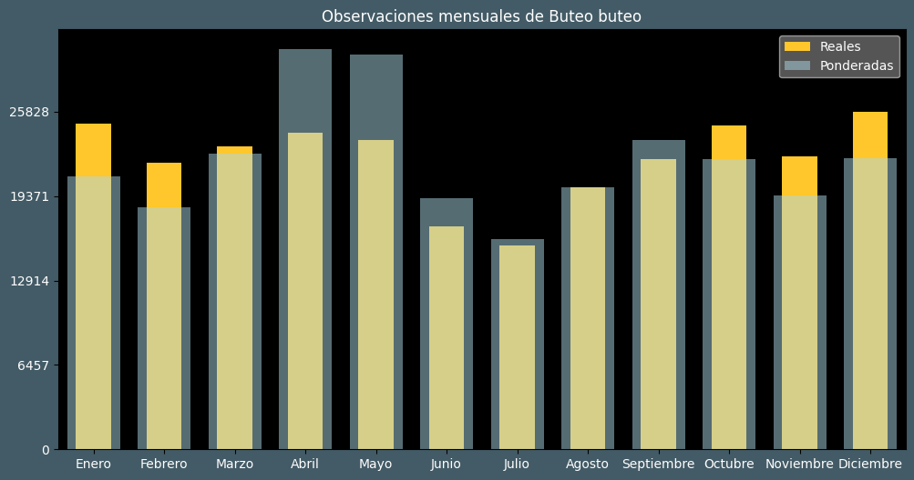

Observaciones por mes
Observations por hora

Categoría IUCN: ?
Género: Buteo
Familia: Accipitridae
Orden: Accipitriformes
Descubrimiento: Linnaeus (1758)
| Idioma | Nombre |
|---|---|
| Afrikaans (af) | Bruinjakkalsvoël |
| Arabic (ar) | حوام شائع |
| Belarusian (be) | Канюк-мышалоў |
| Bulgarian (bg) | Обикновен мишелов |
| Catalan (ca) | Aligot comú |
| Chinese (zh) | 欧亚鵟 |
| Chinese traditional (zh-TW) | 普通鵟〔歐亞鵟〕 |
| Croatian (hr) | Škanjac |
| Czech (cs) | Káně lesní |
| Danish (da) | Musvåge |
| Dutch (nl) | Buizerd |
| English (en) | Common buzzard |
| Estonian (et) | Hiireviu |
| Finnish (fi) | Hiirihaukka |
| French (fr) | Buse variable |
| German (de) | Mäusebussard |
| Greek (el) | (κοινή) γερακίνα |
| Hebrew (he) | עקב חורף |
| Hungarian (hu) | Egerészölyv |
| Icelandic (is) | Músvákur |
| Indonesian (id) | Elang buteo |
| Italian (it) | Poiana |
| Japanese (ja) | ヨーロッパノスリ |
| Korean (ko) | 서양말똥가리 |
| Latvian (lv) | Peļu klijāns |
| Lithuanian (lt) | Paprastasis suopis |
| Maceodnian (mk) | Глувчар |
| Malayalam (ml) | പുൽപ്പരുന്ത് |
| North_sami (se) | Sáhpánboaimmáš |
| Norwegian (no) | Musvåk |
| Persian (fa) | سارگپه معمولی |
| Polish (pl) | Myszołów (zwyczajny) |
| Portuguese (pt) | Águia-de-asa-redonda |
| Russian (ru) | Канюк |
| Serbian (sr) | Mišar |
| Slovak (sk) | Myšiak hôrny |
| Spanish (es) | Busardo ratonero |
| Swedish (sv) | Ormvråk |
| Thai (th) | เหยี่ยวทะเลทรายตะวันตก |
| Turkish (tr) | Şahin |
| Ukrainian (uk) | Канюк звичайний |